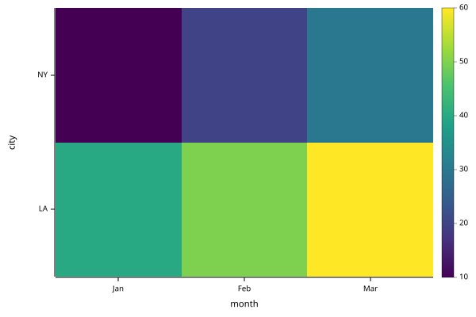

X •plot Y returns a plot spec: a keyed vector holding the data Y and the settings X. Its renderer displays the spec as an SVG chart. Plain text on the left is shorthand for mark. Plots shows each mark and setting with examples.
The structure of Y chooses the series and axes:
A vector plots its values against 0…n-1.
A keyed vector of numbers uses its keys as x labels.
A matrix plots one series per row. Row keys name the series. Column keys label x.
With the cell mark, each row of a matrix is a row of cells, coloured by value. Row keys label the rows, and row 0 is at the top.
A table, a keyed vector of equal-length columns, plots each column as a series. A column named x supplies the x values.
A vector or matrix of plots draws a figure.
Setting
Holds
Default
mark
"line", "point", "bar" or "cell"
"line"
title
Chart title
none
width, height
Size in pixels
600, 400
x, y
title, scale ("linear" or "log"), ticks, and axis ($f hides that axis)
legend
position ("end" or a corner) and border
none
grid
$f hides the grid lines
$t, or $f for cells
axes
$f hides both axes, with their ticks and titles. An axis setting in x or y overrides it for that axis
$t
flip
$t swaps the axes
$f
palette
Colours for numbers: "viridis", "gray", or a list of colours
"viridis"
colorbar
$t shows the colour scale beside the plot
$f
color, size, labels
Styles for every series
series
Styles for one series, keyed by its name
widths, heights, share
Figure cell sizes and shared axis ranges
color also takes one number per point. palette turns these numbers into colours, over the range of every series in the plot. A cell takes its colour from its own value unless color is set.
A direct •mime call on a spec reports these errors: DOMAIN for unknown settings or values, and for cells mixed with other marks; LENGTH when series, colours, sizes or labels don’t match the x values; RANK for data that isn’t a vector, matrix or table.
Data
A matrix plots one series per row. Its column keys label the x axis. "legend":"end" names each line beside its last point:
•plot returns the plot spec, an ordinary keyed vector. Pass settings as the left argument of •plot, or assign them to the spec afterwards. Assigning through a dot path creates any settings the path needs. A corner position draws a boxed legend, titled with the name of the row axis:
mark, color, size and labels style every series. The same fields under series, keyed by series name, style one series.
color is "#rrggbb" or a colour name: "blue", "orange", "green", "red", "purple", "brown", "pink", "gray", "olive", "cyan", "black" or "white". Series without a color take the colours from "blue" to "cyan" in order. One colour or one number per point colours each point separately, as Colour from data describes.
size is the point radius or line width in pixels. For points, one number per point sets sizes by value.
labels is 1 to label each point with its value, or one label per point. "" leaves a point unlabelled. Overlapping labels move apart.
Computation stays in BPL. Here the trend line is a least-squares fit, drawn as a second series:
One number per point in color colours each point by value. palette maps the numbers onto colours, from the lowest value in the plot to the highest. The palette is "viridis" (the default), "gray", or a list of colours spaced evenly along that range. "colorbar":$t shows the scale beside the plot:
The cell mark draws each row of a matrix as a row of cells, coloured by value. Row 0 is at the top, matching the printed matrix. Row keys label the rows:
["mark":"cell""colorbar":$t] •plot sales

A Sierpinski carpet is a 3×3 block with its centre removed. Each filled cell holds a smaller copy of the whole carpet. kron is the Kronecker product: each item of ⍺ scales a copy of ⍵. block↣kron⍣3 block applies it three times, giving an 81×81 carpet. Setting "axes":$f leaves only the cells, without axes or ticks. p.y.axis←$f hides only the y axis. A setting in x or y takes precedence over axes. •plot draws each run of same-coloured cells in a row as one rectangle. The picture has far fewer SVG elements than cells:
A vector or matrix of plots displays as a figure. A vector is one row, and ⍪ makes a column. A plot repeated in adjacent cells spans them. widths and heights give relative cell sizes. With "share":1, plots in the same column share one x range, and plots in the same row share one y range:
The figure settings combine into a scatter plot with marginal histograms. The data comes from a normal distribution’s quantile at evenly spread probabilities. That gives normally distributed values without randomness:
Binning stays in BPL. count counts the values within 0.25 of each bin centre. Each histogram is a bar chart of counts. flip turns the second one on its side:
centers←¯2.75+0.5×⍳12count←{+/(⍵≥⍺-0.25)∧⍵<⍺+0.25}hist←{["x":centers "count":(centers count¨⊂⍵)]}top←["mark":"bar"] •plot hist xside←["mark":"bar""flip":1] •plot hist y
With heights of 1 4, the top histogram is a fifth of the figure’s height. With widths of 4 1, the side histogram is a fifth of the figure’s width. The top-right corner is empty because its position holds ⍬. share lines up each histogram with the scatter plot’s axis: